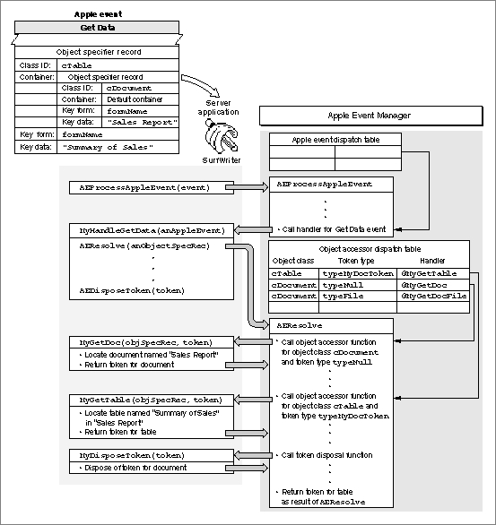

Resolving Object Specifier Records
If an Apple event parameter consists of an object specifier record, your handler for the Apple event should resolve the object specifier record: that is, locate the Apple event objects it describes. The first step is to call theAEResolvefunction with the object specifier record as a parameter.The
AEResolvefunction performs tasks that are required to resolve any object specifier record, such as parsing its contents, keeping track of the results of tests, and handling memory management. When necessary,AEResolvecalls application-defined functions to perform tasks that are unique to the application, such as locating a specific Apple event object in the application's data structures or counting the number of Apple event objects in a container.The
- Note
- Object specifier records are only valid while the Apple event that contains them is being handled. For example, if an application receives an Apple event asking it to cut row 5 of a table, what was row 6 then becomes row 5, and the original object specifier record that referred to row 5 no longer refers to the same row.
AEResolvefunction can call two kinds of application-defined functions. Object accessor functions locate Apple event objects. Object callback functions perform other tasks that only an application can perform, such as counting, comparing, or marking Apple event objects. This section provides an overview of the wayAEResolvecalls object accessor and object callback functions when it resolves object specifier records.Each time
AEResolvecalls one of your application's object accessor functions successfully, the object accessor function should return a special descriptor record created by your application, called a token, that identifies either an element in a specified container or a property of a specified Apple event object. The Apple Event Manager examines the token's descriptor type but does nothing with the token's data. When it needs to refer to the object the token identifies, the Apple Event Manager simply passes the token back to your application.Each object accessor function provided by your application should either find elements of a given object class in a container identified by a token of a given descriptor type, or find properties of an Apple event object identified by a token of a specified descriptor type. The Apple Event Manager uses the object class ID and the descriptor type of the token that identifies the object's container to determine which object accessor function to call.
It is up to you to decide how many object accessor functions you need to write for your application. You can write one object accessor function that locates Apple event objects of several different object classes, or you can write separate object accessor functions for certain object classes. Similarly, you may want to use only one descriptor type for all the tokens returned by your object accessor functions, or you may want to use several descriptor types. The way you define your tokens depends on the needs of your application.
You can use the
AEInstallObjectAccessorfunction to create an object accessor dispatch table that the Apple Event Manager uses to map requests for Apple event objects to the appropriate object accessor function in your application. The Apple Event Manager uses the object class of each requested object and the descriptor type of the token that identifies the object's container to determine which object accessor function to call. Depending on the container hierarchy for a given object specifier record and the way your application defines its object accessor functions, the Apple Event Manager may need to call a series of object accessor functions to resolve the nested object specifier records that describe an Apple event object's container. For information about creating and using the object accessor dispatch table, see "Installing Entries in the Object Accessor Dispatch Tables," which begins on page 6-27.Figure 6-1 illustrates the major steps involved in resolving an object specifier record. The SurfWriter application shown in Figure 6-1 receives a Get Data event whose direct parameter is an object specifier record for a table named "Summary of Sales" in a document named "Sales Report." The SurfWriter application's handler for the Get Data event calls the
AEResolvefunction with the object specifier record as a parameter. TheAEResolvefunction begins to parse the object specifier record. The first object accessor function thatAEResolvecalls is usually the function that can identify the Apple event object in the application's default container--the outermost container in the container hierarchy. In Figure 6-1, the object specifier record for the document "Sales Report" specifies the default container, so the Apple Event Manager calls the object accessor function in the SurfWriter application that can locate a document in a container identified by a descriptor record of descriptor typetypeNull.Figure 6-1 Resolving an object specifier record for a table in a document

After locating the document named "Sales Report," the SurfWriter application returns a token to the Apple Event Manager--that is, a descriptor record that SurfWriter uses to identify the document. The Apple Event Manager examines the descriptor type of the token but does not need to know anything about the token's data to continue parsing the object specifier record. Next, the Apple Event Manager calls the object accessor function that can identify a table in a container identified by a token of descriptor type
typeMyDocToken. When the Apple Event Manager calls this object accessor function, it uses the token that describes the document to identify the table's container. After the SurfWriter application has located the table named "Summary of Sales" in the document named "Sales Report," it returns a token describing that table to the Apple Event Manager.After your application has successfully located an Apple event object, the Apple Event Manager disposes of all previous tokens returned during resolution of the object specifier record for the object. The Apple Event Manager disposes of tokens by calling either the
AEDisposeDescfunction or your application's token disposal function, if you have provided one, which is an object callback function that disposes of a token. In Figure 6-1, theAEResolvefunction calls the SurfWriter application's token disposal function to dispose of the token for the document afterAEResolvereceives the token for the table. After the SurfWriter application has disposed of the token for the document, theAEResolvefunction returns the result of the resolution--that is, the token for the requested table--to the handler in the SurfWriter application that originally calledAEResolve.The Apple Event Manager can complete the cycle of parsing the object specifier record and calling the appropriate object accessor function to obtain a token as many times as necessary to identify every container in the container hierarchy and finish resolving an object specifier record, including disposing of the tokens for the containers. However, one token will always be left over--the token that identifies the requested Apple event object. After
AEResolvereturns this final token and your application performs the action requested by the Apple event, it is up to your application to dispose of the token. Your application can do so by calling theAEDisposeTokenfunction, which in turn calls eitherAEDisposeDescor your application's token disposal function.You need to provide a token disposal function only if a call to
AEDisposeDescis not sufficient by itself to dispose of a token or if you provide marking callback functions, which are three object callback functions that allow your application to use its own marking scheme rather than tokens when identifying large groups of Apple event objects. Your application is not required to provide marking callback functions.To handle object specifier records that specify a test, your application must provide two object callback functions: (a) an object-counting function, which counts the number of elements of a given object class in a given container so that the Apple Event Manager can determine how many elements it must test to find the element or elements that meet a specified condition, and (b) an object-comparison function, which compares one element to another element or to a descriptor record and returns
TRUEorFALSE.Your application may also provide an error callback function that can identify which descriptor record caused the resolution of an object specifier record to fail. Your application is not required to provide an error callback function.
If your application resolves object specifier records without the help of the Apple Event Manager, it must extract the equivalent descriptor records and coerce them as necessary to get access to their data. The Apple Event Manager includes coercion handlers for these coercions; for information about this default coercion handling, see Table 4-1 on page 4-43.
For more information about object accessor functions, see "Writing Object Accessor Functions," which begins on page 6-34. For more information about object callback functions, see "Writing Object Callback Functions," which begins on page 6-54.
The next section, "Descriptor Records Used in Object Specifier Records," describes how the data in an object specifier record is interpreted by the Apple Event Manager.